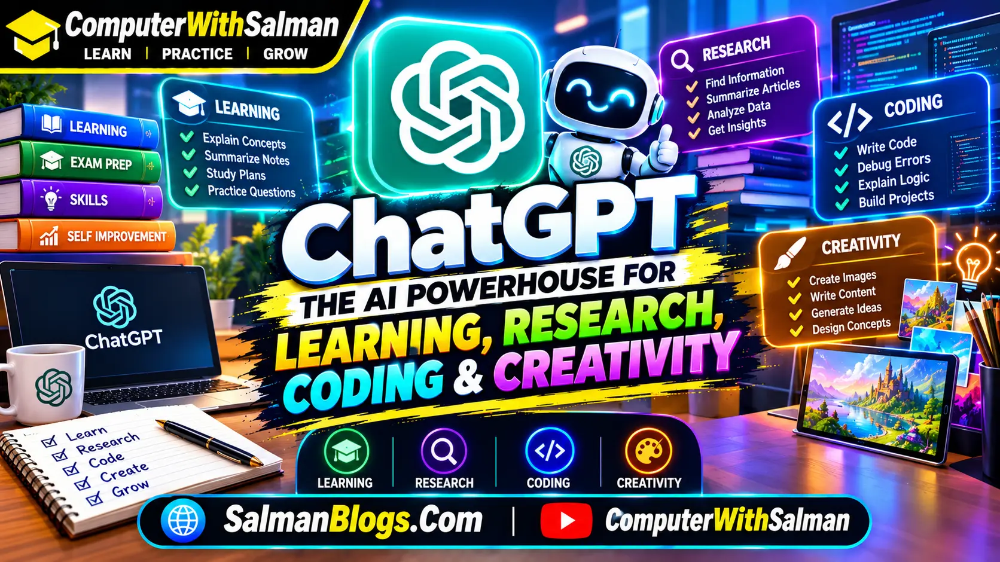
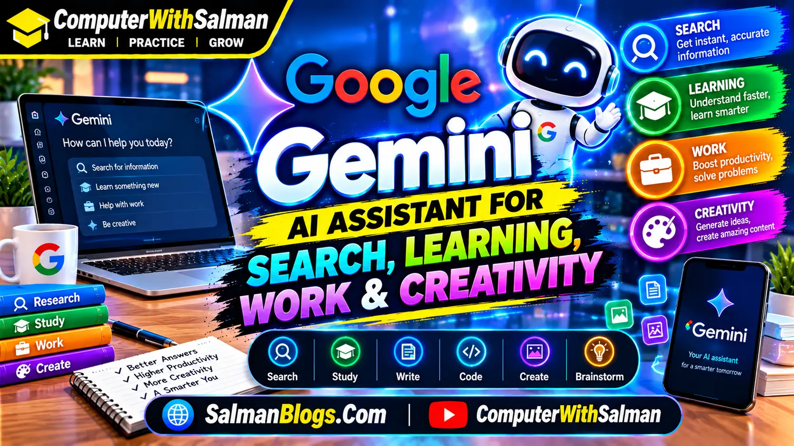
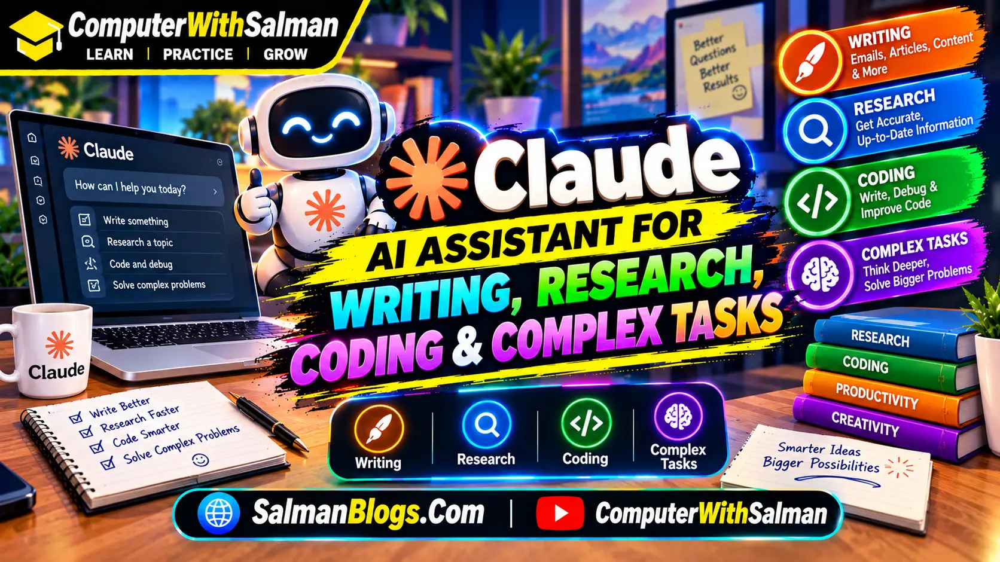
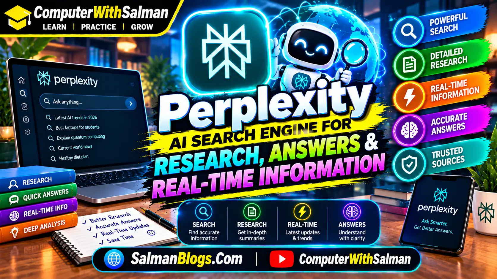
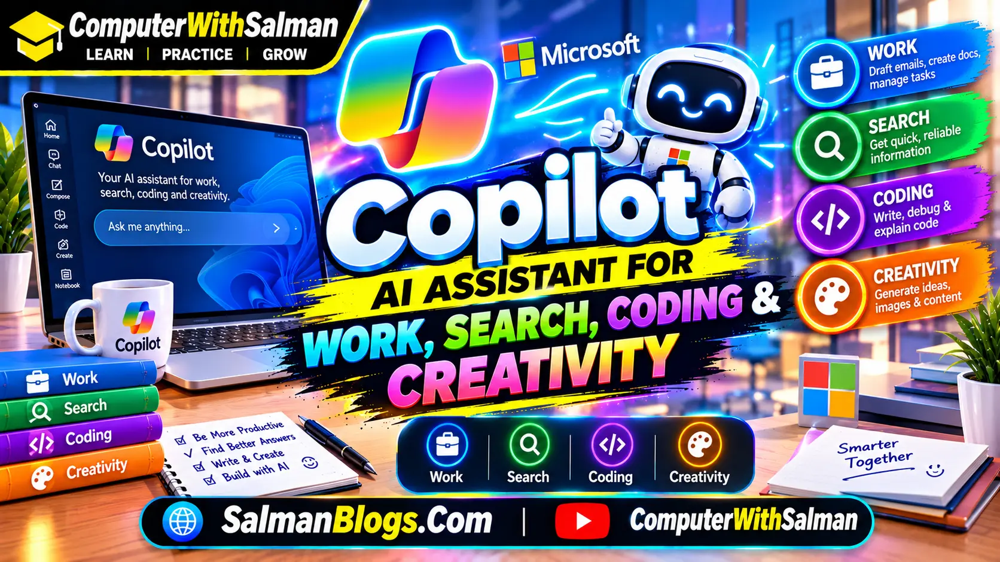
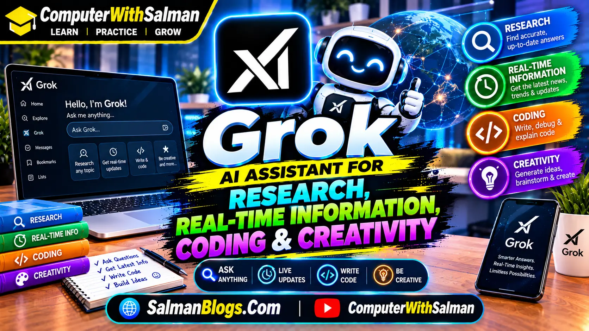
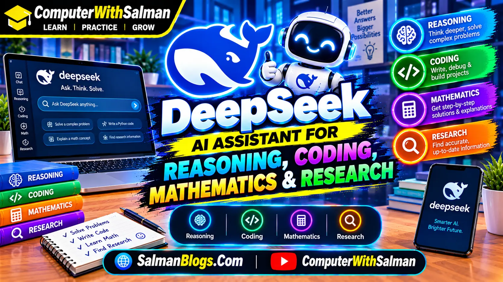
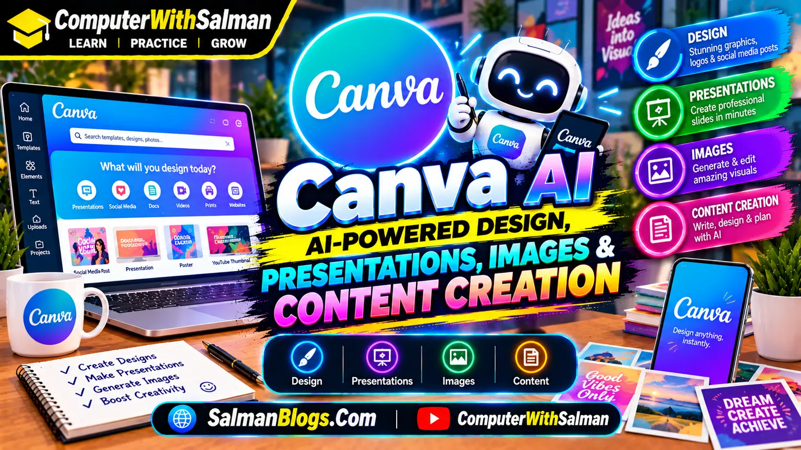
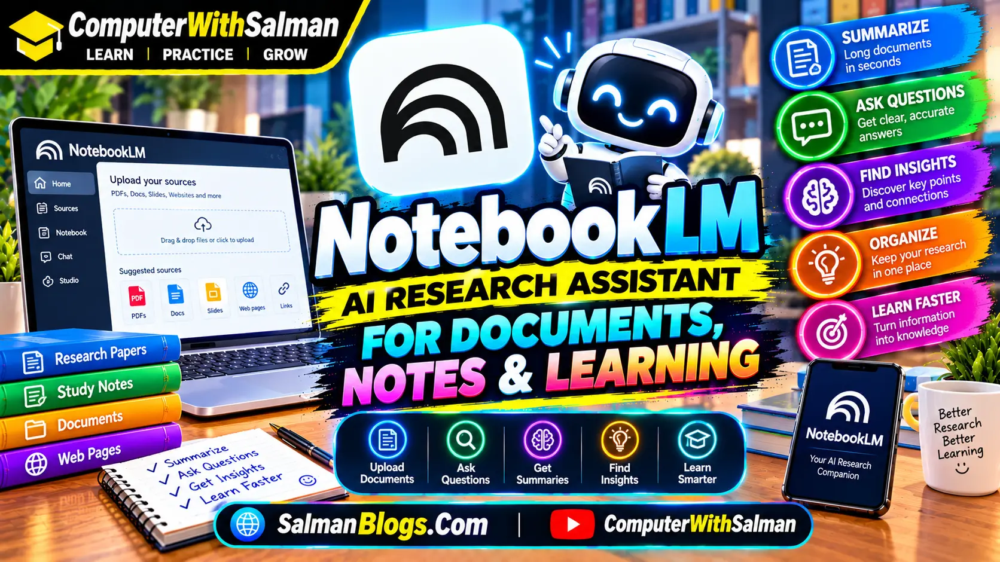

Introduction
In 2026, AI tools are helping people all around the world work faster, learn better, and create amazing content. These tools can save time, reduce effort, and improve your work quality. Whether you are a student, freelancer, business owner, or content creator, these AI tools can make your daily tasks much easier.
1. ChatGPT: The AI Powerhouse for Learning, Research, Coding & Creativity
ChatGPT is one of the most widely used AI assistants for learning, research, writing, coding, creativity, and everyday productivity. In 2026, it has grown far beyond a simple chatbot. Depending on the features available with your plan, ChatGPT can search the web, analyze files, perform deeper research, create and edit images, help with software development, and assist with longer multi-step tasks.
Whether you are a student preparing for an exam, a developer building a website, a content creator planning a video, or a professional working with documents and data, ChatGPT can help you get started, solve problems, and turn ideas into useful results.

What Can ChatGPT Do in 2026?
ChatGPT can handle many different types of tasks. Instead of using a separate tool for every small job, you can describe what you need and continue the conversation to improve the result.
- Answer questions and explain difficult topics in simple language
- Search the web for current information
- Research complex topics using multiple sources
- Write, rewrite, summarize, and improve content
- Analyze PDFs, documents, spreadsheets, and presentations
- Write, explain, debug, and improve programming code
- Create and edit images using natural-language instructions
- Understand images, screenshots, charts, and diagrams
- Translate and work with different languages
- Generate ideas, stories, scripts, captions, and outlines
- Help students learn subjects step by step
- Assist with professional and business tasks
Important ChatGPT Features in 2026
- Web Search: ChatGPT can search the web for information that may have changed recently, making it useful for questions where current information matters.
- Deep Research: For more complicated questions, Deep Research can investigate information across the web, files, and supported connected sources and produce a structured result with citations. Availability depends on the plan and workspace.
- ChatGPT Work: Work can support longer tasks involving research, analysis, documents, spreadsheets, presentations, reports, and other work outputs. Available features depend on the user's plan and workspace.
- Codex: Codex provides AI-assisted software development capabilities that can help developers write, understand, debug, test, and work on coding projects. Codex is available through supported ChatGPT plans and development environments.
- AI Image Creation & Editing: ChatGPT can create images from natural-language instructions and edit existing generated images. In 2026, ChatGPT Images 2.5 introduced improvements including sharper details, more precise editing, and faster image generation.
- File Analysis: You can upload supported files and ask ChatGPT to summarize, analyze, explain, compare, or extract useful information from them.
- Interactive Learning: ChatGPT can provide interactive visual learning experiences for certain mathematics and science topics, allowing learners to experiment with formulas, variables, graphs, and outcomes.
- Connected Apps: Supported apps and connected services can allow ChatGPT to work with information from external sources, depending on the user's account, permissions, and available integrations.
ChatGPT for Students & Learning
One of the most useful ways to use ChatGPT is as a learning assistant. Instead of simply asking for an answer, students can ask ChatGPT to explain a topic, provide examples, create practice questions, and check their understanding.
For example, a student studying Computer Science could ask ChatGPT to explain a difficult programming concept in simple language, show a small example, and then create five MCQs for practice. This makes the learning process more interactive.
- Explain difficult subjects in easy language
- Create study notes and revision guides
- Generate MCQs and practice questions
- Explain programming concepts and code
- Break complicated topics into smaller steps
- Prepare quizzes for self-testing
- Review uploaded study material
- Help prepare for exams and interviews
ChatGPT for Work & Productivity
ChatGPT can also help with everyday professional tasks. You can use it to organize ideas, prepare documents, analyze information, draft communication, and work through complicated tasks step by step.
- Create reports and professional documents
- Analyze spreadsheets and other data
- Prepare presentations and outlines
- Research topics and business information
- Draft emails and professional messages
- Summarize long documents
- Organize project ideas and information
- Reduce repetitive work where supported tools are available
ChatGPT for Developers
ChatGPT has become a useful coding companion for beginners and experienced developers. You can describe a programming problem, paste existing code, or upload project files and ask for an explanation, debugging help, or possible improvements.
Codex extends this type of assistance into more advanced software development workflows, including working with larger coding tasks and development environments.
- Write HTML, CSS, JavaScript, Python, and other programming languages
- Explain programming concepts
- Find and explain errors
- Debug existing code
- Improve and refactor programs
- Explain code line by line
- Help build websites and applications
- Assist with testing and development tasks
ChatGPT for Content Creators
Content creators can use ChatGPT throughout the content-production process, from the first idea to the final draft. It can help brainstorm topics, create outlines, improve scripts, and develop content for different platforms.
- Generate YouTube video ideas
- Create video scripts and outlines
- Write and improve blog posts
- Generate social media captions
- Brainstorm titles and content hooks
- Create and edit AI-generated images
- Turn long content into shorter content ideas
- Improve grammar, clarity, and readability
Real-Life Examples of Using ChatGPT
ChatGPT becomes more useful when you give it a specific goal instead of asking a very general question. Here are some simple examples:
- Student: "Explain Python if-else statements in simple words and give me three beginner examples."
- Teacher: "Create 10 Class 10 Computer Science MCQs about data science with answers."
- Developer: "Find the error in this JavaScript code and explain why it is happening."
- Blogger: "Create an outline for an article about the future of smartphones."
- Content Creator: "Give me five YouTube Shorts ideas about Python for beginners."
- Professional: "Summarize this document and turn the important points into a simple action list."
Why ChatGPT Has Become So Useful in 2026
The biggest change is that ChatGPT is no longer limited to generating text in a conversation. Its growing collection of tools allows users to combine conversation with research, coding, file analysis, image creation, learning, and other workflows.
- Works with multiple types of information
- Can search for current information on the web
- Can perform deeper research for complex questions
- Can analyze supported files and data
- Can create and edit images
- Can assist with programming and software projects
- Can provide interactive learning experiences for supported topics
- Can support longer and more complex tasks
- Can work with supported connected apps and services
How to Get Better Results from ChatGPT
The quality of the response often depends on how clearly you describe what you want. A short question can work, but adding context and requirements usually gives ChatGPT more information to work with.
- Clearly explain what you want to accomplish
- Provide useful background information
- Tell ChatGPT who the content is for
- Specify the format you want
- Give an example when you have a particular style in mind
- Break complicated projects into smaller tasks
- Ask follow-up questions when the first answer is not enough
- Ask for sources or verification when accuracy is important
- Review important information instead of accepting every answer blindly
Important Note
ChatGPT can sometimes produce incorrect, incomplete, or outdated information. Important information should be checked against reliable sources. For medical, legal, financial, or other high-stakes decisions, use qualified professionals and authoritative sources rather than relying only on an AI assistant.
Final Thoughts
ChatGPT in 2026 is much more than a tool for generating text. It can support learning, research, programming, image creation, content development, file analysis, and everyday productivity. The most useful results usually come when you treat it as an assistant that helps you think and work, while you remain responsible for checking important information and making the final decisions.
Best for: Students, teachers, developers, writers, researchers, content creators, professionals, businesses, and everyday users
Pro Tip: Don't just ask ChatGPT for an answer. Tell it your goal, provide context, and explain exactly what kind of result you want.
2. Google Gemini: AI Assistant for Search, Learning, Work & Creativity
Google Gemini is Google's AI assistant designed to help users with learning, research, writing, coding, planning, creativity, and everyday tasks. It can understand different types of information, including text, images, documents, and other supported content.
Gemini is especially useful for people who already use Google services. Depending on the account, plan, region, and available features, Gemini can help with research, document-related tasks, coding, image creation, brainstorming, and productivity.

What Can Google Gemini Do in 2026?
Gemini can handle many different tasks through natural-language conversation. You can ask a question, provide additional context, upload supported files, and continue the conversation to improve the result.
- Answer questions and explain difficult topics
- Help research topics and find useful information
- Summarize and analyze supported documents
- Write, rewrite, and improve content
- Generate ideas for projects and content
- Help with programming and debugging
- Understand images and other supported content
- Create images using AI where the feature is available
- Help students understand lessons and prepare for exams
- Assist with planning trips, projects, and daily tasks
- Help users work with supported Google services
- Support creative tasks such as writing and brainstorming
Important Google Gemini Features in 2026
- Google Search Integration: Gemini can use information from Google Search to help answer questions where current information is important. This can make it useful for research, news-related questions, places, products, and other information that may change over time.
- Deep Research: Gemini can perform deeper research on certain topics by gathering and organizing information into a more detailed response. Availability and usage limits depend on the user's account and plan.
- Multimodal Understanding: Gemini can work with different types of information, including text, images, documents, and other supported inputs. This allows users to ask questions about information beyond plain text.
- AI Image Generation: Gemini can create images from text instructions where image-generation features are available. Users can describe the scene, style, objects, or ideas they want to visualize.
- Long-Context Understanding: Gemini models can work with large amounts of information in supported contexts, making them useful for analyzing lengthy documents, conversations, and other large inputs.
- Google Apps Integration: Depending on the account and available integrations, Gemini can work with information and tasks connected to supported Google services, helping users organize information and complete everyday work.
- Coding Assistance: Gemini can help developers write, understand, debug, explain, and improve code in programming languages such as Python, JavaScript, HTML, CSS, and others.
Google Gemini for Students & Learning
Gemini can be used as a learning assistant for students who want to understand difficult concepts, practice questions, or organize their study material. Instead of only asking for an answer, students can ask Gemini to explain a topic step by step.
For example, a Computer Science student could ask Gemini to explain Python loops in simple language, provide examples, and then create practice questions to test their understanding.
- Explain difficult topics in simple language
- Create study notes and summaries
- Generate MCQs and practice questions
- Explain programming concepts
- Provide step-by-step explanations
- Create quizzes for self-testing
- Analyze supported study documents
- Help students prepare for exams
Google Gemini for Research
Gemini can be useful when researching a topic because it can help organize information, compare ideas, summarize material, and identify areas that may require further investigation.
For more detailed research tasks, supported Gemini research features can help break a broad question into smaller parts and produce a structured result. Important information should still be checked against reliable primary or authoritative sources.
- Research educational topics
- Summarize long information
- Compare different concepts
- Organize research notes
- Generate questions for further research
- Help identify useful sources
- Explain technical subjects
- Turn complex information into easier language
Google Gemini for Work & Productivity
Gemini can help professionals with everyday productivity tasks such as writing, planning, summarizing, brainstorming, and organizing information. Its usefulness can increase when it is connected to supported Google services and workflows.
- Draft professional emails and messages
- Summarize documents and information
- Create reports and outlines
- Brainstorm business ideas
- Organize project information
- Create meeting summaries where supported
- Plan tasks and activities
- Improve written communication
Google Gemini for Developers
Gemini can act as a coding assistant for both beginners and experienced developers. You can provide code and ask Gemini to explain how it works, identify possible problems, or suggest improvements.
It can also help developers learn new programming concepts by providing simple examples and explanations. However, generated code should always be tested before being used in a real project.
- Write HTML, CSS, JavaScript, Python, and other code
- Explain programming concepts
- Find and explain coding errors
- Debug existing programs
- Improve and refactor code
- Explain code line by line
- Build website components
- Help with software development tasks
Google Gemini for Content Creators
Content creators can use Gemini during different stages of content creation. It can help generate ideas, develop outlines, improve writing, and adapt content for different audiences and platforms.
- Generate YouTube video ideas
- Create video scripts and outlines
- Write and improve blog content
- Generate social media captions
- Create content hooks and titles
- Brainstorm new content topics
- Summarize long content
- Improve grammar and readability
Real-Life Examples of Using Google Gemini
Gemini can produce more useful results when you provide a clear goal, relevant context, and the format you want. Here are some practical examples:
- Student: "Explain the difference between a compiler and an interpreter in simple words and give me three examples."
- Teacher: "Create 15 Class 10 Computer Science MCQs about data science with answers."
- Developer: "Explain why this JavaScript function is producing an error and show me how to fix it."
- Blogger: "Create an article outline about how artificial intelligence is changing education."
- Content Creator: "Give me 10 YouTube Shorts ideas for beginner Python programmers."
- Professional: "Summarize this document and convert the important information into a simple checklist."
Why Google Gemini Has Become Useful in 2026
Gemini has developed into more than a basic question-and-answer chatbot. Its combination of AI assistance, multimodal capabilities, research features, coding support, and connections with Google's ecosystem can make it useful for many different types of users.
- Can work with multiple types of information
- Can help with current-information research
- Can perform deeper research for supported tasks
- Can analyze supported documents and files
- Can generate images where the feature is available
- Can assist with programming and coding
- Can help students learn difficult concepts
- Can support writing and content creation
- Can work with supported Google services and integrations
How to Get Better Results from Google Gemini
A clear prompt usually gives an AI assistant more useful information to work with. Instead of asking a very broad question, explain your goal, provide context, and specify the type of response you want.
- Clearly describe what you want to accomplish
- Provide relevant background information
- Tell Gemini who the content is for
- Specify the format you want
- Give examples when you have a specific style in mind
- Break complicated tasks into smaller steps
- Ask follow-up questions to improve the result
- Ask for sources when accuracy is important
- Verify important information before using it
Important Note
Gemini can sometimes provide incorrect, incomplete, or outdated information. Features and availability can also vary by country, account, age, subscription, product, and organization. Always verify important information using reliable sources. For medical, legal, financial, or other high-stakes decisions, use qualified professionals and authoritative sources rather than relying only on an AI assistant.
Final Thoughts
Google Gemini has become a versatile AI assistant for learning, research, coding, writing, creativity, and productivity. Its connection with Google's broader ecosystem can make it particularly useful for people who already use Google services regularly. Like any AI tool, Gemini works best when users provide clear instructions, review the results, and verify important information before relying on it.
Best for: Students, teachers, developers, researchers, writers, content creators, professionals, Google Workspace users, and everyday AI users
Pro Tip: Instead of asking Gemini a one-line question, explain your goal, provide the necessary context, and tell it exactly how you want the final result to be structured.
3. Claude: AI Assistant for Writing, Research, Coding & Complex Tasks
Claude is an AI assistant developed by Anthropic that can help with writing, research, coding, analysis, learning, brainstorming, and many other tasks. It is designed to understand detailed instructions and work with large amounts of information, making it useful for both everyday tasks and more complex projects.
Whether you are a student working on an assignment, a developer reviewing code, a researcher analyzing documents, or a content creator developing ideas, Claude can help you understand information, organize your thoughts, and produce useful results.

What Can Claude Do in 2026?
Claude can handle a wide range of tasks through natural-language conversation. You can provide instructions, documents, code, or other supported content and ask Claude to analyze, explain, rewrite, or transform the information.
- Answer questions and explain difficult concepts
- Write, rewrite, and improve content
- Summarize long documents and information
- Analyze supported files and data
- Write and review programming code
- Debug and explain code
- Research and organize information
- Generate ideas and brainstorm solutions
- Create structured documents and reports
- Help students understand complex subjects
- Assist with professional and business tasks
- Work through complicated multi-step problems
Important Claude Features in 2026
- Advanced Writing: Claude can help create, rewrite, edit, and improve different types of written content. You can specify the audience, tone, structure, and purpose of the content.
- Large-Context Understanding: Claude is designed to work with large amounts of information in supported contexts. This can be useful when analyzing long documents, research material, transcripts, or large codebases.
- Claude for Coding: Claude can assist developers with writing, understanding, debugging, reviewing, and improving code. It can also help developers reason through software-development problems.
- File Analysis: Supported files can be provided to Claude for tasks such as summarization, comparison, extraction, and analysis. Available file types and limits depend on the product and account.
- Research & Information Analysis: Claude can help break complicated questions into smaller parts, organize information, compare ideas, and develop structured research responses.
- Projects: Claude can be used with project-based workflows where users provide relevant instructions and knowledge to support work on a particular topic or task. Availability depends on the account and product.
- Artifacts: Claude can create and work with certain interactive or structured outputs in a dedicated workspace, making it possible to develop things such as documents, code, diagrams, and other useful content.
- Connected Tools & Integrations: Supported integrations can allow Claude to work with external services and information sources. Availability depends on the user's account, permissions, and supported integrations.
Claude for Students & Learning
Claude can be useful as a learning assistant when students want detailed explanations instead of simply receiving a final answer. Students can ask it to explain a concept at their level, provide examples, and create practice questions.
For example, a student learning Python could ask Claude to explain functions in simple language, provide beginner-friendly examples, and then create practice exercises to test their understanding.
- Explain difficult subjects in simple language
- Create study notes and summaries
- Generate practice questions
- Explain programming concepts
- Review and summarize study material
- Create quizzes for self-testing
- Break complicated topics into smaller steps
- Help prepare for exams and interviews
Claude for Research & Analysis
Claude can help users organize and analyze large amounts of information. It can summarize documents, compare different pieces of information, extract important points, and turn unstructured material into a clearer format.
This can be especially useful when working with research papers, reports, meeting notes, documentation, or other lengthy material. Important claims should still be checked against the original sources.
- Summarize lengthy documents
- Compare information from different sources
- Extract important points
- Organize research notes
- Analyze supported files
- Explain technical information
- Create structured research outlines
- Identify questions that require further investigation
Claude for Work & Productivity
Claude can help professionals with writing, planning, analysis, documentation, brainstorming, and other knowledge-work tasks. Instead of starting from a blank page, users can provide their requirements and ask Claude to create a structured first draft.
- Draft professional emails and documents
- Create reports and outlines
- Summarize meeting notes
- Organize project information
- Analyze supported business documents
- Brainstorm ideas and solutions
- Improve professional writing
- Create structured plans and checklists
Claude for Developers
Claude has become a useful coding assistant for developers. You can provide code and ask Claude to explain how it works, find potential problems, suggest improvements, or help build a solution.
Claude can also help developers understand unfamiliar codebases and reason through complicated programming problems. Generated code should always be tested and reviewed before being used in production.
- Write HTML, CSS, JavaScript, Python, and other code
- Explain programming concepts
- Find and explain coding errors
- Debug existing programs
- Review and improve code
- Refactor code
- Explain code line by line
- Help develop websites and applications
- Work through complex software-development tasks
Claude for Content Creators
Content creators can use Claude throughout the content-production process. It can help turn rough ideas into structured outlines, improve drafts, brainstorm topics, and adapt content for different audiences.
- Generate blog post ideas
- Create YouTube video outlines
- Write and improve scripts
- Generate social media content
- Brainstorm titles and hooks
- Rewrite content in different tones
- Summarize long articles or documents
- Improve grammar, clarity, and readability
Real-Life Examples of Using Claude
Claude can produce more useful results when you clearly explain the goal, provide relevant context, and specify the format you need. Here are some practical examples:
- Student: "Explain object-oriented programming in simple words and give me three beginner-friendly examples."
- Teacher: "Create 20 Computer Science MCQs about Python functions with answers and short explanations."
- Developer: "Review this Python code, identify possible errors, and explain how I can improve it."
- Researcher: "Summarize this research document and organize the main findings into clear sections."
- Blogger: "Create a detailed outline for an article explaining how AI is changing education."
- Professional: "Turn these meeting notes into a clear list of decisions, tasks, and deadlines."
Why Claude Is Useful in 2026
Claude is designed to support many types of knowledge work rather than focusing on only one type of task. Its ability to work with detailed instructions, large amounts of information, writing, coding, and structured outputs makes it useful for a variety of users.
- Can work with detailed instructions
- Can analyze large amounts of supported information
- Can help with writing and editing
- Can assist with programming and software development
- Can analyze supported documents and files
- Can create structured and interactive outputs
- Can help students understand complex topics
- Can support research and analysis
- Can assist with professional knowledge-work tasks
How to Get Better Results from Claude
A detailed prompt can give Claude more context about your goal. Instead of simply asking for an answer, explain the situation, provide the relevant information, and describe the format you want.
- Clearly explain your objective
- Provide the necessary background information
- Tell Claude who the final result is for
- Specify the format and length you need
- Provide examples when you want a particular style
- Break complex projects into smaller tasks
- Ask follow-up questions to improve the result
- Ask Claude to identify assumptions or uncertainties
- Verify important information against reliable sources
Important Note
Claude can sometimes produce incorrect, incomplete, or outdated information. Features, usage limits, and availability can vary depending on the product, account, plan, region, and organization. Always verify important information against reliable sources. For medical, legal, financial, or other high-stakes decisions, use qualified professionals and authoritative sources rather than relying only on an AI assistant.
Final Thoughts
Claude is a versatile AI assistant that can support writing, research, coding, learning, document analysis, brainstorming, and other knowledge-work tasks. Its ability to handle detailed instructions and large amounts of information makes it useful for many different workflows. Like any AI assistant, it works best when users provide clear instructions, review the results, and verify important information before using it.
Best for: Students, developers, writers, researchers, teachers, content creators, professionals, and users working with complex information
Pro Tip: Give Claude the full context of your task instead of asking a very broad question. The more clearly you explain your goal, requirements, and desired format, the easier it is for the AI to produce a useful result.
4. Perplexity: AI Search Engine for Research, Answers & Real-Time Information
Perplexity is an AI-powered search and research platform designed to provide direct answers with sources and citations. Instead of simply showing a traditional list of search results, Perplexity combines web search with AI to research a question, summarize information, and show the sources used to support the response.
This makes Perplexity particularly useful for students, researchers, writers, developers, professionals, and anyone who regularly needs to find and understand current information online. Its available features can vary depending on the user's plan and account.

What Can Perplexity Do in 2026?
Perplexity can help users search for information, understand complex topics, compare sources, analyze supported files, and conduct deeper research. You can also continue asking follow-up questions to explore a topic without starting a completely new search.
- Search the web for current information
- Provide direct answers with source citations
- Research complex topics using multiple sources
- Summarize web pages and information
- Compare information from different sources
- Analyze supported uploaded files
- Help with academic and technical research
- Answer follow-up questions about a topic
- Help developers research programming problems
- Generate ideas and organize research
- Assist with professional information gathering
- Create more detailed research reports with supported research modes
Important Perplexity Features in 2026
- AI-Powered Search: Perplexity combines web search with AI-generated answers. Its search system is designed to provide information from the web while showing citations that users can follow and verify.
- Real-Time Web Information: Perplexity searches its live web index, making it useful for questions involving recent events, technology updates, current trends, and other information that can change over time.
- Pro Search: Pro Search is designed for more detailed and complex questions. It can synthesize information from multiple sources and provide a deeper response with citations. Availability and usage limits depend on the user's plan.
- Deep Research: Perplexity's Deep Research mode can perform multiple searches, examine many sources, and produce a more comprehensive research report. The available number of research queries can vary by plan.
- Source Citations: A major feature of Perplexity is its use of citations in answers. Users can open the cited sources to check where information came from rather than relying only on the AI-generated response.
- Multiple AI Models: Supported Perplexity plans can provide access to different AI models, allowing users to work with models from multiple AI companies through the same platform.
- File Analysis: Perplexity supports file uploads for supported accounts and plans, allowing users to ask questions about documents and other supported files.
- Research & Analysis: Perplexity can help users investigate topics, compare information, organize findings, and turn research into a more structured response.
Perplexity for Students & Learning
Students can use Perplexity as a research assistant when they need to understand a topic or find information from multiple online sources. Its citations can also make it easier to trace information back to the original sources.
For example, a Computer Science student could ask Perplexity to explain artificial intelligence, compare different machine-learning techniques, and provide sources for further reading.
- Research educational topics
- Find sources for assignments
- Understand difficult concepts
- Summarize research material
- Compare different concepts
- Find recent information
- Prepare research questions
- Explore topics using cited sources
Perplexity for Research & Academic Work
Research is one of Perplexity's main use cases. Instead of manually opening many search results, users can ask a focused question and receive an AI-generated response supported by citations.
For more complicated topics, deeper research modes can search across multiple sources and organize the findings into a structured report. Researchers should still open and evaluate the original sources before using important claims in academic or professional work.
- Find information from multiple sources
- Research technical topics
- Explore academic subjects
- Compare different viewpoints
- Summarize research findings
- Identify useful sources for further reading
- Organize research notes
- Create structured research reports
Perplexity for Work & Productivity
Professionals can use Perplexity to quickly research industries, technologies, companies, products, trends, and other information needed for their work. It can also help turn research findings into summaries, comparisons, and structured notes.
- Research companies and industries
- Find current business information
- Research products and technologies
- Summarize online information
- Compare different options
- Prepare research briefs
- Analyze supported documents
- Collect sources for reports
Perplexity for Developers
Developers can use Perplexity to research programming problems, explore technical documentation, understand new technologies, and find current information about software tools and frameworks.
This can be especially useful when a developer needs information that may have changed recently, such as software versions, APIs, libraries, or development tools. Generated code and technical information should still be tested and checked against official documentation.
- Research programming problems
- Find current technical information
- Explore programming libraries
- Understand new technologies
- Compare development tools
- Research APIs and frameworks
- Analyze supported technical files
- Help troubleshoot development problems
Perplexity for Content Creators
Content creators can use Perplexity during the research stage of content production. It can help discover current information, collect sources, compare ideas, and develop article or video topics.
- Research YouTube video topics
- Find current blog topics
- Research trending subjects
- Find supporting sources
- Compare information from different websites
- Create content research outlines
- Find statistics and supporting information
- Explore new content ideas
Real-Life Examples of Using Perplexity
Perplexity works particularly well when you have a specific research question. The clearer your question, the easier it is to identify useful information and sources.
- Student: "Explain the difference between artificial intelligence and machine learning and provide reliable sources for further study."
- Teacher: "Research the latest applications of data science in education and summarize the important points with sources."
- Developer: "Research the latest features of this JavaScript framework and explain the important changes with links to official documentation."
- Blogger: "Research the future of smartphones and provide the major technology trends with supporting sources."
- Content Creator: "Research five current AI topics that could be useful for educational YouTube videos and explain why each topic is relevant."
- Professional: "Compare these three technologies using recent information and provide the sources behind the comparison."
Why Perplexity Is Useful in 2026
Perplexity focuses heavily on combining AI with web research. Instead of treating AI answers and search engines as completely separate tools, it brings search, synthesis, citations, and follow-up questions into one workflow.
- Combines AI answers with web search
- Provides citations for information
- Can search for current information
- Supports deeper research workflows
- Can work with supported uploaded files
- Can access multiple AI models on supported plans
- Useful for academic and technical research
- Can help organize complex information
- Supports follow-up questions and conversational research
How to Get Better Results from Perplexity
Perplexity works best when you describe exactly what you want to research. Instead of entering a single broad keyword, ask a complete question and explain what kind of information or sources you need.
- Ask a specific research question
- Explain the purpose of your research
- Specify the time period when recent information matters
- Ask for primary or official sources when appropriate
- Use focused search options when available
- Ask follow-up questions to explore the topic
- Open citations and check the original sources
- Compare information from multiple sources
- Do not rely on AI-generated summaries alone for important claims
Important Note
Perplexity can sometimes provide incorrect, incomplete, or misleading information, even when citations are included. A citation does not automatically mean that every statement in an AI-generated answer is correct. Always open and evaluate important sources yourself. Features, models, usage limits, and availability can also vary by plan and account.
Final Thoughts
Perplexity is especially useful for people who want AI assistance combined with web research and source citations. It can help students, researchers, developers, professionals, and content creators find, understand, and organize information more efficiently. Its strongest use case is research, but its broader AI features can support many everyday tasks as well.
Best for: Students, researchers, developers, writers, content creators, professionals, and anyone who frequently needs current web information
Pro Tip: Don't just ask Perplexity for an answer. Ask it to research the topic, provide reliable sources, and show you where the important information came from. Always check the original sources for important claims.
5. Microsoft Copilot: AI Assistant for Work, Search, Coding & Creativity
Microsoft Copilot is an AI assistant from Microsoft that can help with writing, research, learning, coding, brainstorming, productivity, and everyday tasks. It is designed to work across Microsoft's growing AI ecosystem and can be useful for both personal and professional work.
Depending on the version, account, subscription, and available features, Copilot can answer questions, search the web, analyze information, create content, assist with programming, and work alongside supported Microsoft applications and services.

What Can Microsoft Copilot Do in 2026?
Copilot can handle many different tasks through natural-language instructions. Instead of learning complicated commands, users can simply describe what they want and refine the result through follow-up prompts.
- Answer questions and explain difficult topics
- Search the web for current information
- Summarize and organize information
- Write, rewrite, and improve content
- Generate ideas and brainstorm solutions
- Create AI-generated images where supported
- Help with programming and coding
- Analyze supported files and information
- Assist with Microsoft 365 productivity tasks
- Help students with learning and research
- Support business and professional workflows
- Assist with everyday planning and productivity
Important Microsoft Copilot Features in 2026
- Web Search & Current Information: Copilot can use web information to help answer questions that require current or recently updated information. This makes it useful for research, technology updates, general knowledge, and other changing topics.
- AI-Powered Conversations: Copilot allows users to have natural-language conversations and ask follow-up questions. You can refine an answer instead of starting from the beginning each time.
- Microsoft 365 Integration: Supported Microsoft 365 versions can provide Copilot features inside applications such as Word, Excel, PowerPoint, Outlook, and Teams. Availability depends on the user's account, subscription, and organization.
- AI Writing Assistance: Copilot can help draft, rewrite, summarize, and improve written content. This can be useful for emails, documents, reports, presentations, and other professional communication.
- AI Image Creation: Copilot can support image-generation features where available, allowing users to describe an image and generate a visual result using natural language.
- Microsoft Copilot for Coding: Microsoft's GitHub Copilot tools can provide AI-assisted programming capabilities, including code suggestions, explanations, debugging help, and development assistance.
- File & Document Assistance: Supported Copilot experiences can help users work with documents and other information, including summarization, analysis, and content transformation.
- Productivity Assistance: Copilot can help users organize information, generate ideas, prepare content, and complete supported tasks more efficiently.
Microsoft Copilot for Students & Learning
Students can use Copilot as a learning assistant to understand difficult topics, generate practice questions, summarize information, and organize study material. The goal should be to use AI as a learning aid rather than simply copying answers.
For example, a Computer Science student could ask Copilot to explain Python loops in simple language, provide examples, and then create practice questions to test their understanding.
- Explain difficult subjects in simple language
- Create study notes and summaries
- Generate MCQs and practice questions
- Explain programming concepts
- Break complex topics into smaller steps
- Help organize study material
- Summarize supported documents
- Help prepare for exams and interviews
Microsoft Copilot for Work & Productivity
Copilot can be particularly useful in professional environments where people already work with Microsoft products. Supported Microsoft 365 experiences can help users draft documents, summarize information, organize meetings, analyze data, and prepare presentations.
- Draft professional emails
- Summarize emails and conversations where supported
- Create document drafts
- Help prepare presentations
- Summarize meetings where supported
- Analyze information in supported Excel workflows
- Organize project information
- Generate ideas and action plans
Microsoft Copilot for Developers
Developers can use Microsoft's AI coding tools to get assistance while writing and maintaining software. GitHub Copilot can provide code suggestions, explain existing code, help identify problems, and support developers during different stages of software development.
Copilot can be useful for beginners who need explanations as well as experienced developers who want assistance with repetitive coding tasks. Generated code should always be reviewed, tested, and checked for security and correctness.
- Write HTML, CSS, JavaScript, Python, and other code
- Explain programming concepts
- Generate code suggestions
- Explain existing code
- Find and troubleshoot possible errors
- Improve and refactor code
- Help write tests
- Assist with software-development workflows
Microsoft Copilot for Content Creators
Content creators can use Copilot to brainstorm ideas, create outlines, improve drafts, prepare scripts, and develop content for different platforms.
- Generate YouTube video ideas
- Create video scripts and outlines
- Write blog post drafts
- Generate social media captions
- Brainstorm titles and hooks
- Rewrite content for different audiences
- Summarize long content
- Improve grammar and readability
Microsoft Copilot for Business & Professional Users
Professionals can use Copilot to reduce repetitive work and organize information. When available inside supported Microsoft 365 applications, Copilot can work alongside familiar productivity tools instead of requiring users to move everything into a separate application.
- Draft reports and business documents
- Summarize information
- Prepare presentations
- Organize meeting information
- Assist with spreadsheet analysis
- Draft professional communication
- Brainstorm business ideas
- Create task and project outlines
Real-Life Examples of Using Microsoft Copilot
Copilot becomes more useful when you clearly explain the goal, provide context, and describe the type of result you want.
- Student: "Explain Python functions in simple language and give me five practice questions."
- Teacher: "Create 15 Class 10 Computer Science MCQs about networking with answers."
- Developer: "Explain this JavaScript code and identify any possible errors."
- Office Worker: "Turn these meeting notes into a short summary with clear action items."
- Content Creator: "Create a YouTube video outline about the future of artificial intelligence."
- Professional: "Rewrite this email so it sounds clear, professional, and friendly."
Why Microsoft Copilot Is Useful in 2026
One of Copilot's important strengths is its connection to Microsoft's broader software ecosystem. Users who already work with Microsoft applications can use supported Copilot features within familiar productivity workflows.
- Provides AI-powered assistance through natural language
- Can help with current web information
- Supports writing and content creation
- Can assist with coding
- Can generate images where supported
- Works with supported Microsoft 365 applications
- Can help students with learning and research
- Can support professional productivity
- Can automate or simplify certain repetitive tasks
How to Get Better Results from Microsoft Copilot
Clear instructions usually produce more useful results. Tell Copilot what you are trying to accomplish, provide relevant information, and specify the format or style you need.
- Clearly describe your goal
- Provide relevant context
- Tell Copilot who the result is for
- Specify the format you want
- Give examples when necessary
- Break large tasks into smaller steps
- Ask follow-up questions to improve the result
- Review generated content before using it
- Verify important information from reliable sources
Important Note
Microsoft Copilot can sometimes produce incorrect, incomplete, or outdated information. Features and availability can vary depending on the Copilot product, Microsoft account, subscription, region, and organization. AI-generated code and content should be reviewed before being used, especially in professional or production environments.
Final Thoughts
Microsoft Copilot is a versatile AI assistant that can support learning, research, writing, coding, creativity, and productivity. Its integration with Microsoft's broader ecosystem makes it useful for people who already work with Microsoft products and services. Like other AI assistants, Copilot works best when users provide clear instructions, review the results, and verify important information.
Best for: Students, teachers, developers, professionals, Microsoft 365 users, content creators, business users, and everyday AI users
Pro Tip: Give Copilot a clear goal and enough context instead of using a very short prompt. If you are working inside a Microsoft application, use the information already available in your supported workflow to make the request more specific.
6. Grok: AI Assistant for Research, Real-Time Information, Coding & Creativity
Grok is an AI assistant developed by xAI that can help users with research, writing, coding, brainstorming, analysis, and everyday questions. It is designed to provide conversational answers while also helping users explore current information and different topics.
Grok can be useful for students, developers, researchers, content creators, and everyday users who want an AI assistant for both general questions and more advanced tasks. Features and availability can vary depending on the user's account, plan, platform, and region.
What Can Grok Do in 2026?

Grok can handle many tasks through natural-language conversations. Users can ask questions, provide context, upload supported content, and continue the conversation to improve or refine the result.
- Answer questions and explain difficult topics
- Research current information
- Analyze and summarize information
- Write, rewrite, and improve content
- Help with programming and coding
- Understand supported images and other content
- Generate creative ideas and brainstorming suggestions
- Create AI-generated images where supported
- Help students understand educational topics
- Assist with research and analysis
- Generate social media and content ideas
- Help with everyday planning and productivity
Important Grok Features in 2026
- Real-Time Information: Grok can help users explore current information and topics that are changing over time. This can be useful for researching recent events, technology developments, trends, and other time-sensitive subjects.
- Web Search: Grok can use web-based information to help answer questions that require current knowledge. Search-based answers can provide additional information beyond the model's built-in knowledge.
- Reasoning & Analysis: Supported Grok models can work through more complicated questions and provide detailed explanations, comparisons, and structured reasoning for different types of tasks.
- Multimodal Understanding: Grok can work with supported visual information, allowing users to ask questions about images and other supported content.
- AI Image Generation: Grok supports image-generation capabilities where available, allowing users to describe an idea and create a visual result from a text instruction.
- Coding Assistance: Grok can help developers write, understand, debug, and improve code. It can also explain programming concepts and help developers reason through technical problems.
- Long-Context Tasks: Supported Grok models can work with large amounts of information, which can be useful for analyzing lengthy conversations, documents, code, or other supported inputs.
- Conversational Interaction: Grok allows users to continue a conversation and refine their requests, making it possible to develop an answer step by step instead of starting over for every question.
Grok for Students & Learning
Students can use Grok as a learning assistant to understand difficult subjects, create practice questions, summarize information, and explore new topics. Asking for explanations and examples can make the learning process more interactive.
For example, a Computer Science student could ask Grok to explain Python loops in simple language, show beginner-friendly examples, and then generate a short quiz for practice.
- Explain difficult concepts in simple language
- Create study notes and summaries
- Generate MCQs and practice questions
- Explain programming concepts
- Break complicated topics into smaller steps
- Help review study material
- Create quizzes for self-testing
- Help prepare for exams and interviews
Grok for Research & Current Information
Grok can be useful when researching topics that require recent information. Users can ask questions about technology, current trends, products, developments, and other subjects that may change over time.
For important research, users should still check the original sources and compare information from reliable websites rather than relying only on an AI-generated response.
- Research current topics
- Explore technology developments
- Find information about recent trends
- Compare different ideas
- Summarize information
- Organize research notes
- Explore technical subjects
- Generate questions for further research
Grok for Work & Productivity
Grok can help professionals with brainstorming, writing, research, analysis, planning, and other knowledge-work tasks. Instead of starting from an empty page, users can provide their requirements and ask Grok to create a structured first draft.
- Draft professional emails and messages
- Create reports and outlines
- Summarize information
- Brainstorm business ideas
- Organize project information
- Research industries and technologies
- Improve professional writing
- Create plans and checklists
Grok for Developers
Developers can use Grok as a coding assistant for writing, explaining, debugging, and improving software. It can help beginners understand programming concepts and provide experienced developers with assistance during development.
Grok can also help analyze existing code and suggest possible solutions to programming problems. Generated code should always be tested and reviewed before being used in a real application.
- Write HTML, CSS, JavaScript, Python, and other code
- Explain programming concepts
- Find and explain coding errors
- Debug existing programs
- Improve and refactor code
- Explain code line by line
- Help build websites and applications
- Assist with software-development problems
Grok for Content Creators
Content creators can use Grok to brainstorm ideas, research topics, create outlines, develop scripts, and improve written content. Its ability to work with current information can also be useful when creating content about recent developments and trends.
- Generate YouTube video ideas
- Create video scripts and outlines
- Generate blog post ideas
- Create social media captions
- Brainstorm titles and hooks
- Research current content topics
- Summarize long information
- Improve grammar and readability
Real-Life Examples of Using Grok
Grok can produce more useful results when you clearly explain your goal, provide context, and specify the type of response you need.
- Student: "Explain Python dictionaries in simple language and give me five beginner examples."
- Teacher: "Create 15 Computer Science MCQs about artificial intelligence with answers and short explanations."
- Developer: "Review this JavaScript code and explain what is causing the error."
- Researcher: "Research the latest developments in artificial intelligence and summarize the major changes."
- Blogger: "Create an article outline about how AI is changing the smartphone industry."
- Content Creator: "Give me 10 current technology topics that could work well for educational YouTube videos."
Why Grok Is Useful in 2026
Grok combines general-purpose AI assistance with capabilities designed for current information, reasoning, coding, visual understanding, and creative tasks. This makes it useful for users who want one AI assistant for a wide range of activities.
- Can help with current information
- Supports web-based research
- Can assist with coding and software development
- Can work with supported visual information
- Supports AI image generation where available
- Can help with writing and content creation
- Can assist students with learning
- Can support research and analysis
- Can handle conversational follow-up questions
How to Get Better Results from Grok
Clear prompts usually produce more useful results. Explain what you want to accomplish, provide the necessary context, and tell Grok how you want the final answer structured.
- Clearly describe your goal
- Provide relevant background information
- Specify the audience for the result
- Tell Grok the format you want
- Provide examples when you have a specific style in mind
- Break complex tasks into smaller steps
- Ask follow-up questions when necessary
- Ask for sources when researching important topics
- Verify important information before relying on it
Important Note
Grok can sometimes provide incorrect, incomplete, or outdated information. Current-information features can also return information that requires further verification. Features, models, limits, and availability may vary depending on the user's account, subscription, platform, and region. Always check important information against reliable sources, especially for medical, legal, financial, or other high-stakes decisions.
Final Thoughts
Grok is a general-purpose AI assistant that can support research, learning, coding, writing, image-related tasks, brainstorming, and everyday questions. Its focus on current information and conversational interaction can make it useful for exploring topics and developing ideas. Like any AI tool, users should review its responses and verify important information before using it.
Best for: Students, developers, researchers, content creators, writers, professionals, technology enthusiasts, and everyday AI users
Pro Tip: When asking Grok about current topics, be specific about what information you need and the time period you are interested in. For important facts, open and verify the original sources before using the information.
7. DeepSeek: AI Assistant for Reasoning, Coding, Mathematics & Research
DeepSeek is an AI platform known for its strong focus on reasoning, programming, mathematics, research, and technical problem-solving. It can help users understand difficult concepts, write and debug code, solve problems, analyze information, and generate useful content.
DeepSeek can be useful for students, developers, researchers, teachers, and anyone who regularly works with technical or analytical problems. Depending on the available model and platform, its capabilities and usage limits may vary.

What Can DeepSeek Do in 2026?
DeepSeek can handle many tasks through natural-language conversations. Users can describe a problem, provide additional information, and ask follow-up questions to develop the answer step by step.
- Answer questions and explain difficult topics
- Solve mathematics and logical problems
- Help with programming and software development
- Write and explain code
- Debug programming problems
- Explain technical concepts in simple language
- Analyze and summarize information
- Generate and improve written content
- Help with research and technical subjects
- Create study material and practice questions
- Brainstorm ideas and possible solutions
- Assist with complex reasoning tasks
Important DeepSeek Features in 2026
- Advanced Reasoning: DeepSeek provides models designed to handle complex reasoning tasks. This can be useful for mathematics, logic, technical questions, and problems that require multiple steps to reach a solution.
- Strong Coding Assistance: DeepSeek can help developers write, explain, debug, and improve programming code. It can also help users understand unfamiliar code and work through programming problems.
- Mathematical Problem Solving: DeepSeek can assist with mathematical calculations, equations, logic problems, and step-by-step explanations. Students can use it to understand how a solution is developed rather than only receiving the final answer.
- Technical Problem Solving: DeepSeek can help break complicated technical questions into smaller steps and provide explanations or possible approaches.
- Research Assistance: DeepSeek can help users organize information, summarize material, compare concepts, and develop ideas for research and technical work.
- Longer Problem Analysis: Supported models can handle detailed instructions and larger amounts of context, making them useful for complicated coding, research, and analytical tasks.
- Open-Model Ecosystem: DeepSeek has released AI models that have attracted attention from developers and researchers who want to experiment with or build on capable language models.
- Natural-Language Interaction: Users can communicate with DeepSeek using normal language instead of complicated commands, making technical assistance more accessible to beginners.
DeepSeek for Students & Learning
DeepSeek can be useful for students who need help understanding mathematics, programming, computer science, logic, and other technical subjects. Students can ask for step-by-step explanations and additional examples when a concept is difficult.
For example, a Computer Science student could ask DeepSeek to explain a Python loop, provide a simple example, and then create exercises to practice the concept.
- Explain difficult concepts in simple language
- Solve and explain mathematics problems
- Explain programming concepts
- Create study notes
- Generate MCQs and practice questions
- Create programming exercises
- Break complex topics into smaller steps
- Help prepare for technical exams
DeepSeek for Mathematics & Logical Reasoning
Mathematics and logical reasoning are important areas where reasoning focused AI models can be useful. DeepSeek can help users work through equations, mathematical concepts, logical problems, and multi-step questions.
Instead of asking only for the final answer, students can ask DeepSeek to explain each step and identify where a particular formula or method is being used.
- Solve mathematical problems
- Explain formulas
- Work through equations
- Explain mathematical concepts
- Solve logic problems
- Check problem-solving steps
- Create mathematics practice questions
- Explain solutions in beginner-friendly language
DeepSeek for Developers
DeepSeek is particularly useful for developers who want AI assistance with programming and technical problem-solving. You can provide code and ask the AI to explain it, identify errors, or suggest improvements.
It can also help beginners learn programming by explaining code line by line and providing small examples. Developers should always test and review generated code before using it in real projects.
- Write HTML, CSS, JavaScript, Python, and other code
- Explain programming concepts
- Debug existing code
- Find possible programming errors
- Improve and refactor code
- Explain code line by line
- Generate programming examples
- Help solve algorithmic problems
- Assist with software-development tasks
DeepSeek for Research & Technical Analysis
Researchers and technical users can use DeepSeek to organize information, understand technical concepts, analyze problems, and develop possible approaches to complex questions.
AI-generated research should not be treated as a replacement for original academic or technical sources. Important facts, calculations, and research claims should be checked independently.
- Analyze technical questions
- Explain complex concepts
- Summarize information
- Compare technical approaches
- Develop research ideas
- Analyze programming problems
- Organize technical notes
- Help create research outlines
DeepSeek for Work & Productivity
DeepSeek can also assist with general productivity tasks such as writing, summarizing, brainstorming, organizing information, and creating structured documents.
- Draft emails and professional messages
- Summarize documents and information
- Create reports and outlines
- Brainstorm ideas
- Organize project information
- Improve written content
- Create checklists and plans
- Explain technical information
DeepSeek for Content Creators
Content creators can use DeepSeek for brainstorming, research, outlining, writing, and improving content. It can also be useful when creating educational content about programming, mathematics, science, and technology.
- Generate YouTube video ideas
- Create educational video outlines
- Write blog post drafts
- Create programming tutorials
- Generate social media captions
- Brainstorm titles and hooks
- Summarize technical information
- Improve grammar and readability
Real-Life Examples of Using DeepSeek
DeepSeek can provide more useful results when you clearly describe the problem and explain what kind of solution or explanation you need.
- Student: "Explain Python for loops in simple words and give me three beginner examples."
- Mathematics Student: "Solve this equation step by step and explain why each step is needed."
- Developer: "Find the problem in this Python program and explain how to fix it."
- Teacher: "Create 15 Computer Science MCQs about algorithms with answers."
- Researcher: "Explain the differences between these two machine-learning approaches and organize the comparison into a table."
- Content Creator: "Create a beginner-friendly tutorial outline for learning Python."
Why DeepSeek Is Useful in 2026
DeepSeek has gained attention for its focus on reasoning, mathematics, programming, and technical problem-solving. These capabilities can make it useful for people who regularly work with analytical or technical questions.
- Useful for technical problem solving
- Can assist with mathematical reasoning
- Strong focus on programming assistance
- Can explain technical concepts
- Can help analyze complex questions
- Can support research and learning
- Can generate and improve written content
- Can assist with algorithmic problems
- Can support developers and technical users
How to Get Better Results from DeepSeek
Clear instructions can make technical AI tasks easier to solve. Explain the problem, provide the necessary information, and tell DeepSeek whether you want a short answer, detailed explanation, code, examples, or step-by-step reasoning.
- Clearly describe the problem
- Provide all relevant information
- Specify your programming language when asking coding questions
- Ask for step-by-step explanations when learning
- Provide examples of the desired output
- Break complex problems into smaller parts
- Ask follow-up questions when something is unclear
- Test generated code and calculations
- Verify important information independently
Important Note
DeepSeek can sometimes produce incorrect, incomplete, or outdated information. AI-generated mathematical solutions, code, and technical explanations should be checked carefully, especially when accuracy is important. Features, models, limits, and availability may also change over time.
Final Thoughts
DeepSeek is an AI tool with a strong focus on reasoning, mathematics, programming, and technical problem-solving. It can be useful for students, developers, researchers, and technical users who want help understanding complex problems or developing solutions. As with any AI assistant, users should review the output, test generated code, and verify important information before relying on it.
Best for: Students, programmers, developers, mathematics learners, researchers, teachers, technical professionals, and users interested in AI reasoning
Pro Tip: When solving a technical problem, provide the complete question or code and explain what you have already tried. This gives DeepSeek more useful context for finding and explaining a possible solution.
8. Canva AI: AI-Powered Design, Presentations, Images & Content Creation
Canva AI brings artificial intelligence into Canva's visual design platform, helping users create graphics, presentations, social media content, images, documents, videos, and other visual materials with simple text instructions.
Instead of designing everything manually, users can describe what they want and use AI-powered features to generate ideas, create visual content, edit designs, and speed up repetitive creative tasks. Canva AI can be useful for students, teachers, bloggers, marketers, businesses, YouTubers, and social media creators.
What Can Canva AI Do in 2026?

Canva AI can assist with many parts of the creative process, from generating an initial design idea to editing existing content. It can help users turn a simple description into a starting point for a presentation, graphic, social media post, image, or other visual project.
- Generate design ideas from text prompts
- Create and edit visual content
- Help create presentations
- Generate images and graphics
- Create social media designs
- Assist with marketing materials
- Help write and improve text
- Resize and adapt designs for different platforms
- Create visual content for videos
- Help users edit existing designs
- Create branded content
- Speed up repetitive design tasks
Important Canva AI Features in 2026
- AI Design Generation: Canva AI can help transform a natural-language idea into a starting point for a visual design. This can save time when users do not want to begin a project completely from scratch.
- AI Image Generation: Users can describe an image they need and use Canva's AI-powered image tools to create visual content for different projects.
- Magic Design: Canva's AI-powered design features can help generate layouts and design suggestions based on the content provided by the user.
- AI Writing Assistance: Canva can assist with generating, rewriting, expanding, shortening, and improving text for different types of visual content.
- AI-Powered Editing: AI tools can help users modify visual elements, remove or replace parts of an image, and make creative changes without performing every edit manually.
- Presentation Creation: Canva can help users create presentation layouts and organize content into visually appealing slides.
- Branding Tools: Canva can help businesses and creators maintain consistent visual styles across designs by using brand assets, colors, fonts, and other design elements.
- Social Media Content: Canva provides templates and AI-assisted tools for creating content for social media platforms, including posts, stories, thumbnails, and other promotional graphics.
Canva AI for Students & Learning
Students can use Canva AI to create attractive educational materials without needing advanced graphic-design skills. It can be useful for presentations, posters, diagrams, study materials, project covers, and other visual assignments.
- Create presentation slides
- Design educational posters
- Create project covers
- Make visual study notes
- Create diagrams and educational graphics
- Design infographics
- Create class project presentations
- Improve the visual appearance of assignments
Example: A student preparing a presentation about Artificial Intelligence could ask Canva AI for a modern technology-themed presentation and then edit the generated content to match the requirements of the assignment.
Canva AI for Teachers & Education
Teachers can use Canva AI to create classroom materials more quickly. Instead of designing every educational resource from the beginning, teachers can start with AI-assisted designs and customize them for their students.
- Create lesson presentations
- Design classroom posters
- Create worksheets
- Make educational infographics
- Create certificates
- Design visual explanations
- Create classroom announcements
- Prepare engaging learning materials
Canva AI for Content Creators
Content creators can use Canva AI to speed up the process of creating thumbnails, social media graphics, banners, promotional images, and other visual content.
- YouTube thumbnails
- YouTube channel banners
- Instagram posts
- Facebook posts
- Short-form video graphics
- Blog featured images
- Social media stories
- Promotional graphics
- Infographics
- Presentation designs
Canva AI for Bloggers & Website Owners
Bloggers and website owners can use Canva AI to create visual content that makes articles and online pages more engaging. A blog post can benefit from a custom featured image, infographic, social media graphic, or explanatory visual.
- Create blog featured images
- Design article infographics
- Create social media promotional graphics
- Design website banners
- Create Pinterest-style graphics
- Make visual explanations
- Create branded blog graphics
Example: A technology blogger writing an article about AI tools could use Canva AI to create a professional featured image and several supporting graphics for sharing the article on social media.
Canva AI for Businesses & Marketing
Businesses can use Canva AI to create marketing materials without requiring a professional designer for every small project. AI-assisted tools can help teams produce initial designs and then customize them according to their brand.
- Social media advertisements
- Marketing presentations
- Business flyers
- Posters and promotional graphics
- Product advertisements
- Business presentations
- Email graphics
- Branding materials
Canva AI for YouTube Creators
YouTube creators can use Canva AI to simplify many visual parts of content creation. A creator can design thumbnails, channel artwork, video graphics, presentation slides, and promotional content from one platform.
- Create eye-catching thumbnails
- Design YouTube banners
- Create video title graphics
- Design promotional posts
- Create presentation slides for videos
- Make educational diagrams
- Create social media content for video promotion
Real-Life Examples of Using Canva AI
- Student: "Create a modern presentation design for a project about Artificial Intelligence."
- Teacher: "Create a colorful educational poster explaining the water cycle."
- Blogger: "Create a professional technology-themed featured image for an article about AI tools."
- YouTuber: "Create a modern YouTube thumbnail concept for a video about the best AI tools in 2026."
- Business Owner: "Create a professional promotional graphic for a new online course."
- Social Media Creator: "Create a consistent set of Instagram post designs for a technology page."
Why Canva AI Is Useful in 2026
Canva AI combines AI-assisted creation with a familiar visual design platform. This makes it useful for people who want professional-looking content without having to learn complex graphic-design software.
- Beginner-friendly visual design workflow
- AI-assisted content creation
- Useful for presentations and graphics
- Helpful for social media content
- Useful for bloggers and website owners
- Helpful for YouTube creators
- Useful for marketing and business materials
- Can reduce repetitive design work
- Provides editable designs instead of only generated images
How to Get Better Results from Canva AI
The quality of an AI-generated design depends heavily on the instructions and content you provide. Instead of using a very short prompt, describe the purpose, audience, visual style, dimensions, and important elements you want in the design.
- Clearly describe the purpose of the design
- Mention your target audience
- Describe the desired visual style
- Specify important text that must appear
- Choose the correct design size
- Use your brand colors and fonts when appropriate
- Review AI-generated text carefully
- Customize the generated design instead of publishing it unchanged
- Check images and visual elements before publishing
Important Note
AI-generated designs may contain inaccurate text, unwanted visual elements, or results that do not perfectly match your instructions. Always review and edit AI-generated content before publishing it, especially for business, educational, or professional use. Available AI features can also vary depending on your Canva plan, account, region, and product updates.
Final Thoughts
Canva AI makes visual content creation easier by combining artificial intelligence with Canva's existing design tools. Students, teachers, bloggers, YouTubers, businesses, and social media creators can use it to create presentations, graphics, images, thumbnails, marketing materials, and other visual content more efficiently.
The biggest advantage is that users can start with AI-generated ideas and then manually customize the design to match their own goals, branding, and audience.
Best for: Students, teachers, bloggers, YouTubers, social media creators, marketers, businesses, and anyone who needs attractive visual content
Pro Tip: Don't publish an AI-generated design immediately. Use Canva AI to create the starting point, then customize the colors, typography, layout, images, and text so the final design matches your own brand and purpose.
9. NotebookLM: AI Research Assistant for Documents, Notes & Learning
NotebookLM is an AI-powered research and learning assistant designed to help users understand, organize, summarize, and explore information from their own sources. Instead of asking an AI about a completely general topic, you can provide documents, notes, websites, and other supported sources and use them as the foundation for your work.
This makes NotebookLM especially useful for students, teachers, researchers, writers, and professionals who regularly work with large amounts of information. It can turn complicated source material into easier explanations, summaries, study resources, and research insights.

What Can NotebookLM Do in 2026?
NotebookLM can help users interact with their research material through natural-language questions. After adding supported sources, users can ask questions, request summaries, identify important ideas, compare information, and create useful study or research materials.
- Summarize long documents and notes
- Answer questions about uploaded sources
- Explain difficult concepts in simpler language
- Identify important information from research material
- Compare ideas across multiple sources
- Create study guides
- Create briefing documents
- Generate question-and-answer material
- Help organize research information
- Create audio-based overviews from supported content
Important NotebookLM Features in 2026
- Source-Based Answers: NotebookLM is designed to work with the sources provided by the user, making it useful when you want to explore a specific collection of documents rather than receive only a general AI answer.
- Document Analysis: Users can add supported documents and ask questions about their contents without manually searching through every page.
- Source Citations: NotebookLM can provide references to the source material used for answers, helping users check where important information came from.
- Study Guide Creation: Students can turn their class notes and learning materials into structured study resources for revision.
- Audio Overviews: NotebookLM can transform supported source material into an AI-generated audio discussion that can be useful for reviewing information in a different format.
- Research Organization: Users can keep related sources together and explore them as a connected research collection.
- Interactive Questions: Instead of reading an entire document repeatedly, users can ask specific questions and explore particular sections or concepts.
- Multiple Source Comparison: Researchers can use multiple sources together to identify similarities, differences, and important connections.
NotebookLM for Students & Learning
NotebookLM can be particularly useful for students because textbooks, lecture notes, PDFs, research papers, and other learning materials can be difficult to review manually. Students can use their own study material as a source and ask questions about it in simple language.
- Summarize chapters and lecture notes
- Explain difficult concepts
- Create revision notes
- Generate study guides
- Create practice questions
- Review important definitions
- Compare information from different sources
- Prepare for exams
Example: A student studying Computer Science could add their chapter notes and ask NotebookLM to explain the most important concepts, create revision questions, and identify topics that deserve additional study.
NotebookLM for Teachers
Teachers can use NotebookLM to work with lesson plans, educational documents, curriculum material, reference documents, and other teaching resources. It can help turn large amounts of information into more manageable material.
- Summarize teaching resources
- Create lesson preparation notes
- Generate discussion questions
- Create revision material
- Compare educational resources
- Explain complex topics in simpler language
- Prepare classroom activities
NotebookLM for Research & Academic Work
Researchers can use NotebookLM to explore collections of papers, reports, notes, and other research material. Instead of manually switching between multiple documents, they can ask questions across their selected sources.
- Summarize research papers
- Identify key arguments
- Compare multiple documents
- Find important themes
- Organize research notes
- Create research briefings
- Explore relationships between sources
Example: A researcher working on Artificial Intelligence could add several research papers and ask for a comparison of their main findings, methodologies, limitations, and conclusions.
NotebookLM for Bloggers & Content Writers
Bloggers and writers can use NotebookLM to understand their research material before creating an article. It can help organize information, identify important points, and create a structured understanding of the available sources.
- Analyze research documents
- Extract important points
- Create article research notes
- Compare information from different sources
- Identify useful facts and concepts
- Create content outlines
- Understand complicated source material
NotebookLM should be used as a research and organization assistant rather than simply copying its output into a published article. Writers should verify important information and add their own analysis, experience, and original perspective.
NotebookLM for Professionals
Professionals can use NotebookLM to work with reports, project documentation, meeting material, policies, product information, and other business documents.
- Summarize long reports
- Prepare briefing notes
- Review project documentation
- Extract important information
- Compare business documents
- Prepare meeting material
- Understand large information collections
NotebookLM for Audio Learning
One of NotebookLM's distinctive capabilities is its ability to create AI-generated audio overviews from supported source material. This can provide an alternative way to review information when reading a long document is inconvenient.
For example, a student could use an audio overview to review important concepts while traveling or during another activity. However, audio summaries should not replace checking the original material when exact details are important.
Real-Life Examples of Using NotebookLM
- Student: "Analyze these Computer Science notes and create a simple revision guide with important definitions and concepts."
- Teacher: "Review these lesson materials and create five conceptual questions for students."
- Researcher: "Compare the main findings and limitations of these research papers."
- Blogger: "Analyze these sources and create a structured outline for an article about artificial intelligence."
- Professional: "Summarize this long business report and identify the most important points for a short briefing."
- Content Creator: "Analyze these research sources and identify the key facts I should understand before creating an educational video."
Why NotebookLM Is Useful in 2026
One of the biggest challenges in modern learning and research is dealing with too much information. NotebookLM focuses on helping users interact with their selected sources, making large collections of information easier to understand and explore.
- Useful for source-based research
- Helpful for studying large documents
- Can simplify complicated information
- Useful for organizing research material
- Helpful for creating study resources
- Supports multiple types of research workflows
- Can provide source references for checking information
- Offers audio-based learning options
How to Get Better Results from NotebookLM
The quality of the results depends heavily on the quality and relevance of the sources you provide. If your source material is incomplete, outdated, or inaccurate, the resulting analysis may also be limited.
- Add reliable and relevant sources
- Organize related documents together
- Ask specific questions instead of vague questions
- Request simple explanations when studying difficult topics
- Ask for comparisons when working with multiple sources
- Check important answers against the original documents
- Use citations to locate supporting information
- Do not treat AI-generated summaries as a replacement for the original source
Important Note
NotebookLM can make mistakes, misunderstand source material, or produce incomplete summaries. Always check important information against the original documents, especially for academic, legal, financial, medical, or professional work. Available features, supported sources, usage limits, and access can also change over time depending on Google's product updates, account, plan, or region.
Final Thoughts
NotebookLM is especially useful when your work starts with documents, notes, research papers, or other source material. Rather than simply asking an AI general questions, you can give it relevant information and then interact with that material through questions, summaries, comparisons, study resources, and other research workflows.
For students, teachers, researchers, bloggers, and professionals, NotebookLM can reduce the time needed to organize and understand large amounts of information while still allowing users to return to the original sources for verification.
Best for: Students, teachers, researchers, bloggers, writers, professionals, and anyone who works with large collections of documents or research material
Pro Tip: Don't just ask NotebookLM for a summary. Ask specific questions about the sources, request comparisons, identify gaps or important concepts, and then verify critical information against the original documents.
10. Adobe Firefly: AI for Image, Video, Audio & Creative Content
Adobe Firefly is Adobe's generative AI creative platform designed to help users create and edit images, videos, audio, vector graphics, and other visual content using simple instructions. It combines AI generation with Adobe's professional creative workflow, making it useful for beginners, content creators, designers, marketers, and creative professionals.
Instead of creating every visual element manually, users can describe what they want and use AI-powered tools to generate or modify content. Firefly can also be used to refine existing images and videos, helping creators move from an initial idea to a finished creative project more efficiently.
What Can Adobe Firefly Do in 2026?
Adobe Firefly has expanded beyond simple AI image generation. In 2026, its creative AI tools cover image, video, audio, design, editing, and ideation workflows. Adobe also provides AI-assisted workflows that can help creators work across different creative tasks from a more unified interface. :contentReference[oaicite:1]{index=1}
- Generate images from text prompts
- Generate videos from text or images
- Edit images using natural-language instructions
- Remove unwanted objects from images
- Expand image backgrounds
- Upscale images
- Edit and modify video content
- Generate music and sound content
- Generate speech and voiceovers
- Create vector graphics and design elements
- Create visual concepts and mood boards
- Assist with creative production workflows
Important Adobe Firefly Features in 2026
- AI Image Generation: Firefly can generate images from natural-language descriptions and provides tools for refining and editing generated or existing images. :contentReference[oaicite:2]{index=2}
- AI Video Generation: Users can create video clips from ideas and prompts, with options for different resolutions, aspect ratios, and creative styles. :contentReference[oaicite:3]{index=3}
- Prompt-Based Image Editing: Users can describe changes they want to make to an image, such as removing objects, replacing elements, or expanding the background. :contentReference[oaicite:4]{index=4}
- AI Video Editing: Firefly provides browser-based video editing and AI-assisted workflows that can help creators modify video content and build creative sequences. :contentReference[oaicite:5]{index=5}
- AI Audio Creation: Firefly includes tools for generating music, speech, and sound-related content. Adobe's 2026 updates also added capabilities for generated music and expressive speech. :contentReference[oaicite:6]{index=6}
- Firefly AI Assistant: Adobe introduced a conversational Firefly AI Assistant designed to help creators direct complex creative workflows using natural-language instructions. :contentReference[oaicite:7]{index=7}
- Creative Boards: Firefly Boards can help users organize ideas, references, generated assets, and visual concepts on a shared creative workspace. :contentReference[oaicite:8]{index=8}
- Multiple AI Models: Firefly can provide access to models from Adobe and selected partner providers, giving creators additional choices for different creative tasks. :contentReference[oaicite:9]{index=9}
Adobe Firefly for Students & Learning
Students can use Firefly to create visual material for presentations, assignments, projects, educational posters, and other learning activities. It can be especially useful for students who want to create professional-looking visuals without advanced graphic-design skills.
- Create presentation graphics
- Design educational posters
- Create project illustrations
- Generate visual concepts
- Create diagrams and supporting graphics
- Improve images used in assignments
- Create visual material for educational videos
Example: A student creating a presentation about climate change could use Firefly to generate suitable environmental illustrations and then combine them with their own research and presentation content.
Adobe Firefly for Content Creators
Content creators can use Firefly to create visual and multimedia assets for websites, YouTube channels, social media, advertisements, and digital campaigns. Its combination of image, video, and audio tools can reduce the need to use separate tools for every creative task.
- Create YouTube thumbnails
- Generate background images
- Create social media graphics
- Generate short video concepts
- Create promotional visuals
- Generate music and sound content
- Create voiceovers
- Edit existing visual assets
Adobe Firefly for Bloggers & Website Owners
Bloggers can use Firefly to create original visual material for articles, websites, newsletters, and social media campaigns. Instead of relying entirely on generic stock images, creators can develop visuals around the exact topic and style of an article.
- Create blog featured images
- Generate article illustrations
- Create website banners
- Design promotional graphics
- Create social media images
- Generate infographic concepts
- Edit existing blog images
Example: A technology blogger writing about future smartphones could use Firefly to create a futuristic smartphone concept image for the article's featured image.
Adobe Firefly for YouTube Creators
YouTube creators can use Firefly throughout the visual production process. It can help generate thumbnail concepts, backgrounds, video clips, graphics, sound, and other creative assets.
- Create thumbnail backgrounds
- Generate video clips
- Create visual effects
- Generate supporting images
- Create music for creative projects
- Generate voice content
- Edit visual elements
- Create promotional graphics
Adobe Firefly for Designers
Designers can use Firefly as a creative assistant during ideation, exploration, editing, and production. Instead of replacing the designer's creative decisions, AI can help generate variations and accelerate repetitive parts of the workflow.
- Explore design concepts
- Generate visual variations
- Remove unwanted objects
- Expand image compositions
- Generate design elements
- Create mood boards
- Experiment with different visual styles
- Prepare creative assets for further editing
Adobe Firefly for Businesses & Marketing
Businesses can use Firefly to produce marketing and promotional materials more efficiently. Teams can experiment with different creative directions before selecting and refining the final concept.
- Create advertising concepts
- Generate product visuals
- Create social media campaigns
- Design promotional graphics
- Create marketing videos
- Generate presentation visuals
- Develop campaign concepts
- Create variations of creative assets
Real-Life Examples of Using Adobe Firefly
- Student: "Create a clean educational illustration showing how artificial intelligence is used in healthcare."
- Blogger: "Create a futuristic technology image for a blog article about smartphones in 2030."
- YouTuber: "Create a dramatic technology-themed background for a YouTube thumbnail about the latest AI tools."
- Designer: "Create several modern visual concepts for a technology brand."
- Business Owner: "Create a professional promotional concept for an online course."
- Video Creator: "Generate a short cinematic video concept showing a futuristic smart city."
Why Adobe Firefly Is Useful in 2026
Modern content creation often requires images, videos, audio, graphics, and editing. Firefly brings many of these AI-assisted creative capabilities into one ecosystem, allowing creators to move from an initial idea toward a finished project with fewer separate tools. Adobe's 2026 updates have expanded Firefly across image, video, audio, vector, and conversational creative workflows. :contentReference[oaicite:10]{index=10}
- Useful for image generation
- Useful for AI video creation
- Supports AI-assisted image editing
- Provides audio generation tools
- Helpful for social media content
- Useful for YouTube creators
- Helpful for designers and marketers
- Can speed up creative experimentation
- Works with broader Adobe creative workflows
How to Get Better Results from Adobe Firefly
Good prompts can make a major difference when generating creative content. Instead of writing only a few words, describe the subject, environment, composition, style, lighting, mood, camera perspective, and intended use when those details matter.
- Clearly describe the subject
- Mention the desired visual style
- Describe the environment or background
- Specify the mood and lighting
- Mention the intended platform or use
- Choose an appropriate aspect ratio
- Generate multiple concepts when exploring ideas
- Edit and refine the generated result
- Review text and visual details before publishing
Important Note
AI-generated content can contain unexpected details, inaccurate text, visual errors, or results that do not perfectly match your instructions. Always review and edit generated content before publishing it. Availability, usage limits, models, and features can also vary by Adobe plan, account, region, and product updates.
Final Thoughts
Adobe Firefly has developed into a broader creative AI platform rather than being limited to simple image generation. Its current tools cover images, video, audio, editing, ideation, and other creative workflows, making it useful for both beginners and experienced creators.
For bloggers, YouTubers, designers, marketers, students, and businesses, Firefly can help turn creative ideas into visual and multimedia content faster while still allowing the creator to control and refine the final result.
Best for: Designers, YouTubers, bloggers, marketers, businesses, students, photographers, video creators, and other visual-content creators
Pro Tip: Treat Firefly as a creative assistant rather than a complete replacement for your own ideas. Generate several concepts, choose the strongest direction, and then refine the result until it matches your brand and audience.
Frequently Asked Questions (FAQs)
Some of the widely used AI tools in 2026 include ChatGPT, Google Gemini, Claude, Perplexity, Microsoft Copilot, Grok, DeepSeek, Canva AI, NotebookLM, and Adobe Firefly. Each tool is designed for different tasks such as learning, research, coding, writing, productivity, design, and content creation.
ChatGPT, Google Gemini, and Microsoft Copilot are accessible options for beginners. They can help with learning, writing, brainstorming, answering questions, planning, and everyday tasks without requiring advanced technical skills.
Yes. AI tools can help students understand difficult topics, summarize information, create study materials, practice questions, improve writing, and explain concepts in simpler language. NotebookLM can also be useful when studying information from uploaded sources.
Perplexity, ChatGPT, Google Gemini, Claude, and NotebookLM can be useful for different research tasks. Their capabilities vary, so important information should still be checked against reliable and original sources.
ChatGPT, Claude, Google Gemini, Microsoft Copilot, and DeepSeek can assist with programming. They can explain code, find possible errors, generate examples, and help developers understand programming concepts.
Canva AI and Adobe Firefly are useful options for AI-powered design and visual content creation. They can help users generate or modify images, create designs, and develop visual content using text instructions and other AI features.
Many AI tools provide free access with certain limitations, while additional features, higher usage limits, or advanced capabilities may require a paid plan. Available features and pricing can change over time and may also vary by region or account.
No. AI-generated information can sometimes contain mistakes, incomplete explanations, or outdated information. Always verify important facts using reliable sources, especially for academic, financial, legal, medical, or other important decisions.
Yes. AI tools can help create social media captions, post ideas, images, marketing content, videos, and other creative materials. Canva AI, ChatGPT, Adobe Firefly, and other tools can support different parts of the content creation process.
Yes. ChatGPT, Claude, Google Gemini, Microsoft Copilot, and other AI tools can help with drafting articles, rewriting text, generating ideas, creating outlines, improving grammar, and developing content. Human review is still important before publishing the final result.
Write clear and specific prompts. Explain what you want, provide useful context, mention your preferred format, and include examples when necessary. You can also ask the AI to improve or refine its response instead of accepting the first result.
Yes. AI tools can assist businesses and professionals with research, writing, presentations, marketing, data analysis, coding, design, customer communication, and productivity. The most suitable tool depends on the specific task, workflow, and available features.
Final Thoughts
You do not need to use every AI tool in this list. The right choice depends on what you actually want to accomplish. Here is a simple way to decide:
- If you want an AI assistant for learning, writing, coding, and everyday tasks → ChatGPT
- If you want AI connected with Google Search and Google services → Google Gemini
- If you need help with detailed writing, coding, and complex tasks → Claude
- If you want AI-powered search and research with web sources → Perplexity
- If you work with Microsoft products and want an AI assistant for productivity → Microsoft Copilot
- If you want real-time information, research, reasoning, and creative AI features → Grok
- If your main focus is coding, mathematics, and technical problem-solving → DeepSeek
- If you want to create presentations, graphics, social posts, and designs with AI → Canva AI
- If you want to study and research using your own documents and notes → NotebookLM
- If you want AI-powered image, video, audio, and creative content generation → Adobe Firefly
The goal is not to find one AI tool that does everything. Instead, choose the tool that fits your task, learn how to use it well, and always review important information before relying on the result.
In simple words: tell AI what you want to accomplish, choose the tool that matches the job, and use AI to make your work smarter and more efficient, not to replace your own thinking.